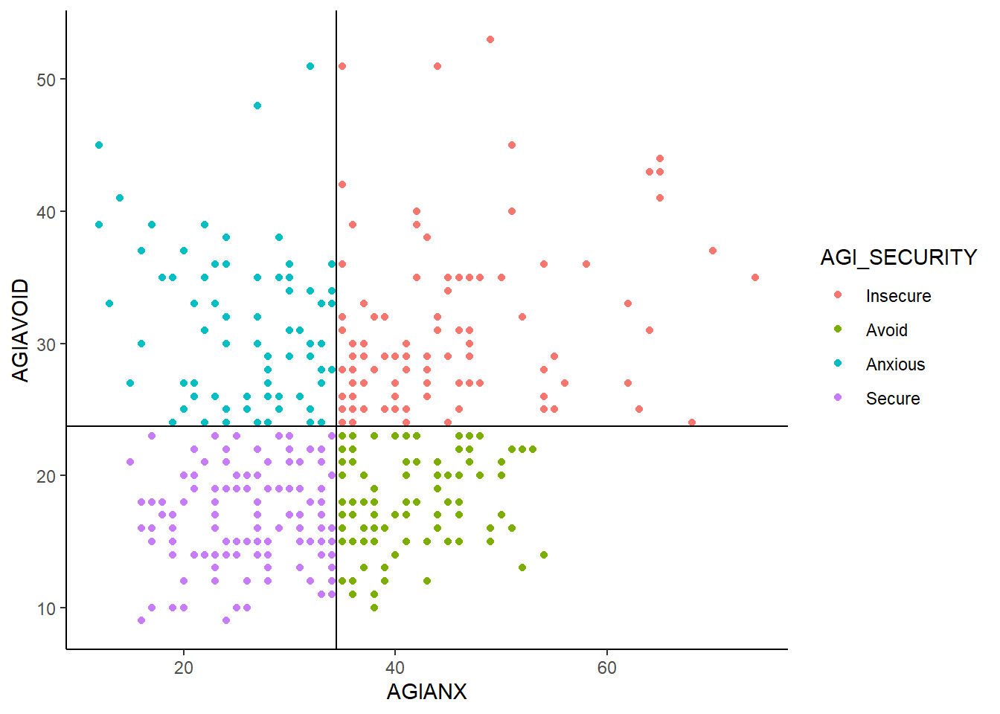

Last updated: 2021-08-15
Checks: 6 1
Knit directory: religiousity-covid-study/
This reproducible R Markdown analysis was created with workflowr (version 1.6.2). The Checks tab describes the reproducibility checks that were applied when the results were created. The Past versions tab lists the development history.
The R Markdown is untracked by Git. To know which version of the R Markdown file created these results, you’ll want to first commit it to the Git repo. If you’re still working on the analysis, you can ignore this warning. When you’re finished, you can run wflow_publish to commit the R Markdown file and build the HTML.
Great job! The global environment was empty. Objects defined in the global environment can affect the analysis in your R Markdown file in unknown ways. For reproduciblity it’s best to always run the code in an empty environment.
The command set.seed(20210724) was run prior to running the code in the R Markdown file. Setting a seed ensures that any results that rely on randomness, e.g. subsampling or permutations, are reproducible.
Great job! Recording the operating system, R version, and package versions is critical for reproducibility.
Nice! There were no cached chunks for this analysis, so you can be confident that you successfully produced the results during this run.
Great job! Using relative paths to the files within your workflowr project makes it easier to run your code on other machines.
Great! You are using Git for version control. Tracking code development and connecting the code version to the results is critical for reproducibility.
The results in this page were generated with repository version a368c61. See the Past versions tab to see a history of the changes made to the R Markdown and HTML files.
Note that you need to be careful to ensure that all relevant files for the analysis have been committed to Git prior to generating the results (you can use wflow_publish or wflow_git_commit). workflowr only checks the R Markdown file, but you know if there are other scripts or data files that it depends on. Below is the status of the Git repository when the results were generated:
Ignored files:
Ignored: .Rhistory
Ignored: .Rproj.user/
Ignored: data/Boccia et al - Attachment to God Style Relates to Religiosity Measures.docx
Ignored: data/COVID19 Mental Health Data_forNoah.xlsx
Ignored: data/LGedits_Attachment to God Style Relates to Religiosity Measures endnote[29].docx
Ignored: data/MH & COVID updated.xlsx
Ignored: data/Methods.docx
Ignored: data/Rates of anxiety and depression in college students before and during the pandemic.docx
Ignored: data/Religiousity_Covid_Data_2021_07_24.csv
Ignored: data/Research Questions.txt
Ignored: data/imp_dat.RData
Ignored: data/~$COVID19 Mental Health Data_forNoah.xlsx
Ignored: data/~$MH & COVID updated.xlsx
Untracked files:
Untracked: analysis/R0_Summary_Table.Rmd
Untracked: analysis/R1_correlations.Rmd
Untracked: analysis/R2_HADS.Rmd
Untracked: analysis/R3_atg_mental_health.Rmd
Untracked: analysis/R4.Rmd
Untracked: analysis/R5.Rmd
Untracked: analysis/data_summary_and_imputation.Rmd
Untracked: code/load_packages.R
Untracked: code/utility_functions.R
Untracked: manuscript/
Unstaged changes:
Modified: .gitignore
Modified: analysis/index.Rmd
Note that any generated files, e.g. HTML, png, CSS, etc., are not included in this status report because it is ok for generated content to have uncommitted changes.
There are no past versions. Publish this analysis with wflow_publish() to start tracking its development.
Research Question 4:
Do students with secure attachment score experience less anxiety or depression comparing those with a positive COVID test?Read in data
# Load imputed data
load("data/imp_dat.RData")
imp_dat_c1 <- imputation[[1]]
imp_dat_c2 <- imputation[[2]]
imp_dat_mids <- rbind(imp_dat_c1, imp_dat_c2)
mydata <- readxl::read_xlsx("data/MH & COVID updated.xlsx")
mydata <- mydata[,colnames(mydata) != "filter_$"]
# recoding to correct for errors
# recode all 0's for AUTH or BENE as NA
mydata$AUTH[mydata$AUTH == 0] <- NA
mydata$BENE[mydata$BENE == 0] <- NA
mydata <- mydata %>%
group_by(COHORT) %>%
mutate(
BENE.z = (BENE - mean(BENE, na.rm=T))/(sd(BENE, na.rm=T))
)
myVar <- c("COHORT","COVID", "AUTH", "BENE","BENE.z", "AGIANX", "AGIAVOID", "DEPR", "DEPR_DIAG", "ANX", "ANX_DIAG", "AGI_SECURITY")
subdat <- mydata %>%
dplyr::select(ID, COHORT, COVID, AUTH, BENE, BENE.z, AGIANX, AGIAVOID, DEPR, DEPR_DIAG, ANX, ANX_DIAG, AGI_SECURITY)
subdat$flag = 0
i <- 1
for(i in 1:nrow(subdat)){
subdat$flag[i] = anyNA(subdat[i,-c(1:3)])
}
subdat <- subdat %>%
filter(flag == 0)
subdat$Cohort = factor(subdat$COHORT, levels=1:2, labels=c("MH-COVID", "ATG"))subdat %>%
summarise(
AGIANX = mean(AGIANX),
AGIAVOID = mean(AGIAVOID)
)# A tibble: 2 x 3
COHORT AGIANX AGIAVOID
<dbl> <dbl> <dbl>
1 1 32.2 23.2
2 2 38.7 24.5subdat <- subdat%>%
mutate(
AGI_SECURITY = factor(AGI_SECURITY, levels=1:4, labels=c("Insecure","Avoid", "Anxious","Secure"))
)
p <- ggplot(subdat, aes(x=AGIANX, y=AGIAVOID, color=AGI_SECURITY))+
geom_point()+
geom_vline(xintercept = 34.4)+
geom_hline(yintercept = 23.7)+
theme_classic()
p
out <- summary(aov(DEPR ~ Cohort + AGI_SECURITY + Cohort:AGI_SECURITY, data=subdat))
out Df Sum Sq Mean Sq F value Pr(>F)
Cohort 1 265 265.0 30.73 5.4e-08 ***
AGI_SECURITY 3 441 146.9 17.03 2.0e-10 ***
Cohort:AGI_SECURITY 3 25 8.2 0.95 0.42
Residuals 395 3406 8.6
---
Signif. codes: 0 '***' 0.001 '**' 0.01 '*' 0.05 '.' 0.1 ' ' 1p.adjust(out[[1]]$`Pr(>F)`,method = "fdr")[1] 8.16e-08 6.06e-10 4.17e-01 NAout <- summary(aov(ANX ~ Cohort + AGI_SECURITY + Cohort:AGI_SECURITY, data=subdat))
out Df Sum Sq Mean Sq F value Pr(>F)
Cohort 1 382 382 26.32 4.5e-07 ***
AGI_SECURITY 3 1039 346 23.85 3.3e-14 ***
Cohort:AGI_SECURITY 3 41 14 0.94 0.42
Residuals 395 5734 15
---
Signif. codes: 0 '***' 0.001 '**' 0.01 '*' 0.05 '.' 0.1 ' ' 1p.adjust(out[[1]]$`Pr(>F)`,method = "fdr")[1] 6.82e-07 9.88e-14 4.19e-01 NAout <- summary(aov(DEPR ~ Cohort + AGI_SECURITY + Cohort:AGI_SECURITY, data=imp_dat))
out Df Sum Sq Mean Sq F value Pr(>F)
Cohort 1 511 511 56.17 3.5e-13 ***
AGI_SECURITY 1 771 771 84.74 < 2e-16 ***
Cohort:AGI_SECURITY 1 19 19 2.06 0.15
Residuals 454 4131 9
---
Signif. codes: 0 '***' 0.001 '**' 0.01 '*' 0.05 '.' 0.1 ' ' 1p.adjust(out[[1]]$`Pr(>F)`,method = "fdr")[1] 5.28e-13 3.76e-18 1.52e-01 NAout <- summary(aov(ANX ~ Cohort + AGI_SECURITY + Cohort:AGI_SECURITY, data=imp_dat))
out Df Sum Sq Mean Sq F value Pr(>F)
Cohort 1 742 742 50.2 5.3e-12 ***
AGI_SECURITY 1 1616 1616 109.3 < 2e-16 ***
Cohort:AGI_SECURITY 1 46 46 3.1 0.079 .
Residuals 454 6710 15
---
Signif. codes: 0 '***' 0.001 '**' 0.01 '*' 0.05 '.' 0.1 ' ' 1p.adjust(out[[1]]$`Pr(>F)`,method = "fdr")[1] 7.89e-12 1.37e-22 7.92e-02 NAout <- mi.anova(mi.res=imp_dat_mids, formula = "DEPR ~ Cohort*as.factor(AGI_SECURITY)", type=3)Univariate ANOVA for Multiply Imputed Data (Type 3)
lm Formula: DEPR ~ Cohort*as.factor(AGI_SECURITY)
R^2=0.151
..........................................................................
ANOVA Table
SSQ df1 df2 F value Pr(>F) eta2
Cohort 229.5 1 7.48 5.925 0.0430 0.04932
as.factor(AGI_SECURITY) 431.5 3 6.46 6.270 0.0246 0.09272
Cohort:as.factor(AGI_SECURITY) 41.8 3 16.43 0.493 0.6922 0.00898
Residual 3950.5 NA NA NA NA NA
partial.eta2
Cohort 0.0549
as.factor(AGI_SECURITY) 0.0985
Cohort:as.factor(AGI_SECURITY) 0.0105
Residual NAp.adjust(out$anova.table$`Pr(>F)`,method = "fdr")[1] 0.0645 0.0645 0.6922 NAout <- mi.anova(mi.res=imp_dat_mids, formula = "ANX ~ Cohort*as.factor(AGI_SECURITY)", type=3)Univariate ANOVA for Multiply Imputed Data (Type 3)
lm Formula: ANX ~ Cohort*as.factor(AGI_SECURITY)
R^2=0.1813
..........................................................................
ANOVA Table
SSQ df1 df2 F value Pr(>F) eta2
Cohort 390.7 1 6.24 4.11 0.08707 0.04827
as.factor(AGI_SECURITY) 999.1 3 6.79 9.31 0.00831 0.12342
Cohort:as.factor(AGI_SECURITY) 77.6 3 46.99 1.08 0.36869 0.00959
Residual 6627.8 NA NA NA NA NA
partial.eta2
Cohort 0.0557
as.factor(AGI_SECURITY) 0.1310
Cohort:as.factor(AGI_SECURITY) 0.0116
Residual NAp.adjust(out$anova.table$`Pr(>F)`,method = "fdr")[1] 0.1306 0.0249 0.3687 NA
sessionInfo()R version 4.0.5 (2021-03-31)
Platform: x86_64-w64-mingw32/x64 (64-bit)
Running under: Windows 10 x64 (build 19042)
Matrix products: default
locale:
[1] LC_COLLATE=English_United States.1252
[2] LC_CTYPE=English_United States.1252
[3] LC_MONETARY=English_United States.1252
[4] LC_NUMERIC=C
[5] LC_TIME=English_United States.1252
attached base packages:
[1] stats graphics grDevices utils datasets methods base
other attached packages:
[1] mitools_2.4 mitml_0.4-1 naniar_0.6.0 miceadds_3.11-6
[5] mice_3.13.0 car_3.0-10 carData_3.0-4 patchwork_1.1.1
[9] psych_2.0.12 viridis_0.5.1 viridisLite_0.3.0 gridExtra_2.3
[13] xtable_1.8-4 kableExtra_1.3.4 GGally_2.1.1 MASS_7.3-53.1
[17] data.table_1.14.0 readxl_1.3.1 forcats_0.5.1 stringr_1.4.0
[21] dplyr_1.0.5 purrr_0.3.4 readr_1.4.0 tidyr_1.1.3
[25] tibble_3.1.0 ggplot2_3.3.3 tidyverse_1.3.0 workflowr_1.6.2
loaded via a namespace (and not attached):
[1] minqa_1.2.4 colorspace_2.0-0 ellipsis_0.3.1 rio_0.5.26
[5] visdat_0.5.3 rprojroot_2.0.2 fs_1.5.0 rstudioapi_0.13
[9] farver_2.1.0 fansi_0.4.2 lubridate_1.7.10 xml2_1.3.2
[13] splines_4.0.5 mnormt_2.0.2 knitr_1.31 jsonlite_1.7.2
[17] nloptr_1.2.2.2 broom_0.7.5 dbplyr_2.1.0 compiler_4.0.5
[21] httr_1.4.2 backports_1.2.1 assertthat_0.2.1 Matrix_1.3-2
[25] cli_2.3.1 later_1.1.0.1 htmltools_0.5.1.1 tools_4.0.5
[29] gtable_0.3.0 glue_1.4.2 Rcpp_1.0.7 cellranger_1.1.0
[33] jquerylib_0.1.3 vctrs_0.3.6 svglite_2.0.0 nlme_3.1-152
[37] xfun_0.21 ps_1.6.0 openxlsx_4.2.3 lme4_1.1-26
[41] rvest_1.0.0 lifecycle_1.0.0 statmod_1.4.35 pan_1.6
[45] scales_1.1.1 hms_1.0.0 promises_1.2.0.1 parallel_4.0.5
[49] RColorBrewer_1.1-2 yaml_2.2.1 curl_4.3 sass_0.3.1
[53] reshape_0.8.8 stringi_1.5.3 highr_0.8 boot_1.3-27
[57] zip_2.1.1 rlang_0.4.10 pkgconfig_2.0.3 systemfonts_1.0.1
[61] evaluate_0.14 lattice_0.20-41 labeling_0.4.2 tidyselect_1.1.0
[65] plyr_1.8.6 magrittr_2.0.1 R6_2.5.0 generics_0.1.0
[69] DBI_1.1.1 pillar_1.5.1 haven_2.3.1 foreign_0.8-81
[73] withr_2.4.1 survival_3.2-10 abind_1.4-5 modelr_0.1.8
[77] crayon_1.4.1 jomo_2.7-2 utf8_1.1.4 tmvnsim_1.0-2
[81] rmarkdown_2.7 grid_4.0.5 git2r_0.28.0 reprex_1.0.0
[85] digest_0.6.27 webshot_0.5.2 httpuv_1.5.5 munsell_0.5.0
[89] bslib_0.2.4